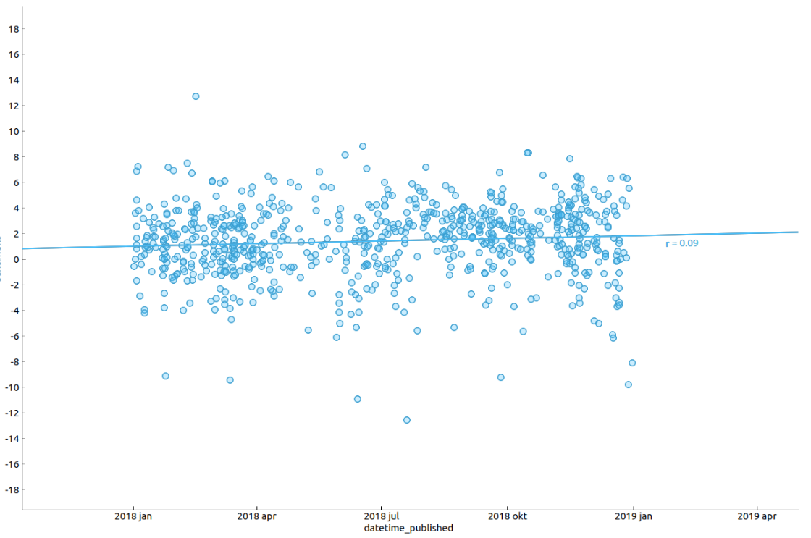
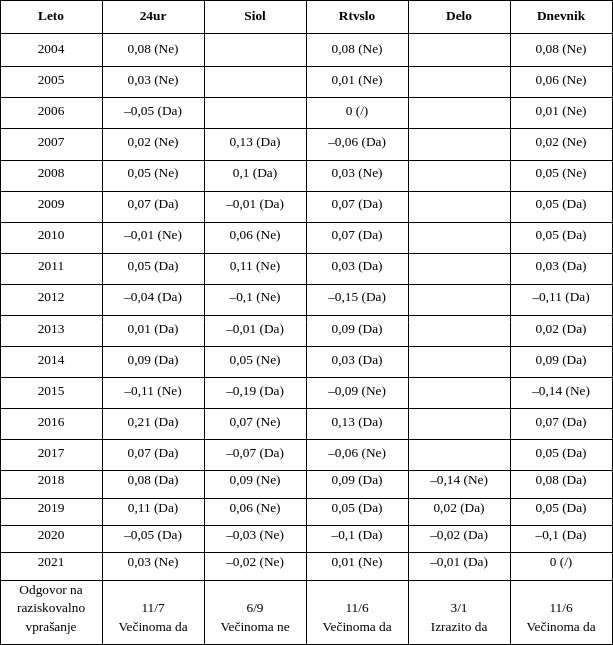
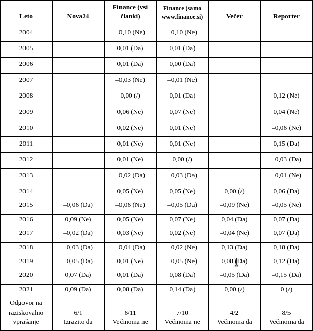
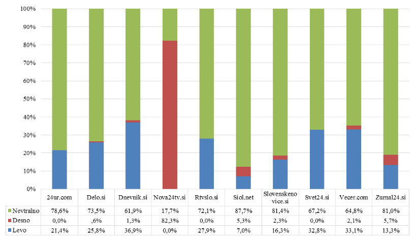
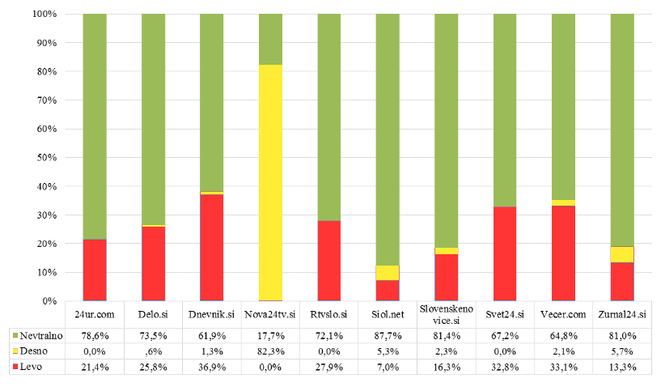

Uravnoteženost spletnih medijev
Rok Jaklič,
27. 3. 2023
Uvod
Dvom v uravnoteženo poročanje (v zadnjem času predvsem spletnih medijev) je prisoten praktično od prvega objavljenega članka v kateremkoli mediju, kateregakoli avtorja. Ampak če se pojavi dvom, ga je dobro, če ne drugega, včasih preveriti ali vsaj testirati, ali je ta do neke mere upravičen. To lahko najlažje naredimo z dokazovanjem dejstev ali z empiričnimi metodami raziskovalnega dela, kar je lahko dolgotrajen proces, v nekaterih primerih pa celo nemogoč, npr. če so dogodki enkratni in nemerljivi. Na srečo nam v zadnjih letih preverjanje dejstev in dogodkov olajša tehnologija hranjenja digitalnih podatkov na svetovnem spletu za relativno nizko ceno.
(Ne)odvisni raziskovalec
Za začetek pomislimo, kako bi preverili ali si odgovorili na vprašanje, ali se nam zdi nek članek v poročanju na dano tematiko uravnotežen. Se pravi, ali so v članku na izbrano tematiko kar se da enakovredno predstavljeni različni argumenti, mnenja, pogledi, in to v tematikah, pri katerih je splošno znana polarizacija (npr. članki, ki se navezujejo na politiko) ali razlika v mnenjih (tudi avtorja članka). Pomislimo tudi, kako bi se izognili prevelikim vplivom svojega mnenja na odgovor. Hitro pridemo do tega, da je mogoče bolje, da na to zastavljeno vprašanje odgovorijo drugi »neodvisni raziskovalci«. In prav to so naredili avtorji s Fakultete za medije z Raziskavo medijske krajine, v kateri so raziskovali odnos medijev do določene tematike v določenem obdobju. Izbrali so si nekaj (trenutno perečih) tem in ugotavljali, ali o tematiki mediji pišejo »pozitivno« ali »negativno« glede na, kot pravijo avtorji raziskave, politično »afiliacijo« oz. glede na politično pripadnost medijev in glede na trenutno vladajočo politično strukturo – se pravi, kdo nam vlada (ali politična levica ali politična desnica). To so ugotavljali oz. raziskovali, kot radi pravimo računalničarji, ročno s pomočjo ocenjevalcev, ki so glede na določene lastnosti posamezne objave ocenjevali, ali so objave uravnotežene. Ampak tudi ti ocenjevalci imajo lahko subjektivno mnenje in lahko ocenjujejo glede na svoj željen končni rezultat. Temu se lahko sicer v veliki meri izognemo, če damo določeno stvar ocenjevat več ocenjevalcem, kar so avtorji navedene raziskave tudi naredili.
Kaj pa če bi uravnoteženost objave ocenjeval kar neki stroj oz. računalnik? Ali pa nam pri tem vsaj malo pomagal?
Stroj nima nikakršnega mnenja, političnega nazora in ne razume političnega vpliva (do neke mere) in tudi ne ve, kaj je uravnoteženost. Zna pa povedati, ali je neka beseda pozitivno ali pa negativno naravnana – to smo ga naučili mi oz. smo mu mi pomagali, da se je naučil sam. Če stroj zna povedati, ali je beseda pozitivna ali negativna, zna tudi povedati, ali je v povprečju članek bolj pozitiven ali bolj negativen. Temu tudi rečemo, da pridobimo informacijo o sentimentu članka.
In ideja je, da pridobimo članke nekega medija in pogledamo, ali so ti članki bolj pozitivni ali bolj negativni za določeno obdobje in tematiko.
Postopek je naslednji:
- Izberemo medij (npr. Rtvslo.si).
- Pridobimo članke z želeno tematiko in za določeno obdobje ter jih grupiramo po letih (npr. analizirati želimo vse članke, ki vsebujejo besedo vlada, in jih grupiramo po letih 2014, 2015, 2016, 2017, 2018, 2019, 2020, 2021, 2022).
- Vsakemu članku posebej s pomočjo programa izračunamo sentiment članka, tj. ali je članek v izbranih besedah bolj pozitiven ali bolj negativen).
Postavimo si raziskovalni vprašanji:
- Ali je spletni medij uravnotežen pri poročanju glede na predpostavljeno politično orientacijo?
- Ali spletni mediji, naklonjeni desnosredinskim vladam, objavljajo bolj pozitivne novice o vladi v obdobju, ko je na oblasti desnosredinska vlada, in obratno, ali spletni mediji, naklonjeni levosredinskim vladam, objavljano bolj pozitivne novice o vladi v obdobju, ko je na oblasti levosredinska vlada?
Nato pa gremo po naslednjem postopku:
- Predpostavimo politično orientacijo medija (levosredinosko ali desnosredinsko).
- Pogledamo, kdo je na oblasti v določenem obdobju (npr. za posamezno leto).
- Gledamo sentiment člankov (ali trend sentimenta) posameznega medija skozi določeno oz. izbrano obdobje.
Kot že omenjeno, ugotavljanje sentimenta člankov lahko prepustimo kar računalniku, pri čemer s pomočjo orodij za podatkovno analitiko ugotavljamo, kakšen je senitment nekega članka. Program Orange nam to omogoča na razmeroma preprost način, pri katerem s pomočjo vtičnikov in diagrama sestavimo želen postopek analize, program želeno izvede, razlago pa prepusti uporabniku. Je pa res, da moramo imeti vsaj okvirno razumevanje tematike in principov delovanja.
Konkretneje program Orange naredi analizo, v kateri za posamezen članek oz. besedilo izračuna sentiment po Liu in Hu metodi za slovenski jezik (Sentiment Analysis), pri kateri je izračunana vrednost razlika med številom pozitivnih in številom negativnih besed, normalizirano z dolžino besedila in pomnoženo s 100. Izračunana vrednost predstavlja razliko sentimenta v odstotkih oz. nam izračunana vrednost lahko pove, ali je besedilo bolj pozitivno ali bolj negativno naravnano. In to naredimo za vse članke za določeno obdobje. Na koncu lahko program izračuna in prikaže še regresijsko premico, ki v statistiki opisuje vedenje množice podatkov oz. bi lahko rekli, da opisuje trend danih podatkov. Pozitivna številka opisuje pozitiven trend, negativna številka pa opisuje negativen trend.
Na koncu dobimo take grafe:

Graf prikazuje izračunane vrednosti sentimenta (vsaka modra točka) po Liu Hu metodi za leto 2018 in za spletni medij Siol. Na grafu je prikazana tudi regresijska premica z vrednostjo r = 0,09 (navedeno prikazuje pozitiven trend sentimenta v letu 2018).
To naredimo za vsako leto posebej in za najbolj znane spletne medije v zadnjih letih in dobimo razpredelnici, v katerih je za posamezno leto in posamezen medij izračunana regresijska premica. Pri posamezni izračunani vrednosti je v oklepaju odgovor na naše raziskovalno vprašanje. Odgovor na raziskovalno vprašanje je pritrdilen, če je večina odgovorov za posamezen medij skozi obdobja pritrdilna, in obratno, npr. spletni medij 24ur ima v 18 letih zabeleženih 11 let, ki sledijo predpostavljenemu političnemu nazoru, in 7 let, ko ne (da – 11, ne – 7), zato je odgovor na raziskovalno vprašanje 1 za spletni medij 24ur »večinoma da«.


Če se izognemo obširni razlagi ugotovitev in zaključkov, lahko iz navedene tabele zaključimo, da mediji, ki so naklonjeni desnosredinskim vladam, večinoma objavljajo bolj pozitivne novice o vladi v obdobju, ko je na oblasti desnosredinska vlada, in obratno, spletni mediji, ki so naklonjeni levosredinskim vladam, objavljajo večinoma bolj pozitivne novice o vladi v obdobju, ko je na oblasti levosredinska vlada. Lahko tudi zaključimo, da sta po teh podatkih najbolj uravnotežena spletna medija Siol in Finance. Do podobnega zaključka (vsaj za spletni portal Siol) so prišli tudi raziskovalci na Fakulteti za medije.
Manipulacija ali dezinformacija?
Zakon o medijih določa, da Republika Slovenija podpira medije pri ustvarjanju in razširjanju programskih vsebin, ki so pomembne, med drugim tudi za zagotavljanje pluralnosti in raznolikosti medijev, hkrati pa omogoča svobodo izražanja. Ta se nemalokrat prepleta z interpretacijo podatkov in dejstev, ki ustreza političnemu nazoru ali nekemu prepričanju avtorja prispevka, urednika ali lastnika spletnega medija.
Podatek se lahko interpretira na več možnih načinov, npr. znan je primer na pol polnega kozarca, pri katerem je za optimista kozarec na pol poln oz. skoraj poln, za pesimista pa skoraj prazen. Še več, avtorja nekega prispevka ne ovira kaj dosti, da podatek ali zaključek nekega drugega prispevka predstavi na način (oz. zmanipulira), da ga je na koncu lahkorazumeti popolnoma drugače od izvornega zaključka. Takrat govorimo o dezinformaciji.
Da ni prav vse iz trte izvito, si poglejmo konkreten primer manipulacije in dezinformacije, kako so največji slovenski spletni mediji poročali o omenjeni raziskavi z naslovom Raziskava medijske krajine, ki jo je naredila Fakulteta za medije leta 2020.
24ur.com
Za spletni medij 24ur.com je navedeno raziskavo avtorica Neža Pušnik v svojem članku z naslovom Raziskava ministrstva za kulturo: mediji v Sloveniji so pretežno nevtralni”, zmanipulirala na več načinov. Poglejmo.
Manipulacija št. 1
Naslov prispevka na 24ur.com se glasi: »Raziskava ministrstva za kulturo: mediji v Sloveniji so pretežno nevtralni.«
V spletnih prispevkih, kjer je tematika povzeta iz drugih virov, je v zadnjem času moderno že v naslovu predstaviti zaključke tako, da lahko bralec že iz naslova in podnaslova razbere bistvo objave, podrobnosti pa potem sledijo v samem jedru prispevka.
Že sam naslov je izbran dokaj površno, saj raziskavo ni delalo ministrstvo za kulturo, ampak zasebna Fakulteta za medije. Avtorica sicer potem to navede v podnaslovu, vseeno pa si že tukaj lahko pozoren bralec zastavi vprašanje, kdo je potem avtor raziskave. V bistvu bralcu ne preostane drugega, kot da si hkrati prebere omenjeno raziskavo.
Če preberemo ključne ugotovitve avtorjev Raziskave medijske krajine, ugotovimo, da je avtorica prispevka zmanipulirala ključne ugotovitve same raziskave že v samem naslovu, saj avtorji raziskave pravijo ravno nasprotno od avtorice prispevka na 24ur.com, in sicer (citiram zadnji stavek omenjene raziskave):
»V tem smislu lahko rečemo, da ima levi pol slovenske politike precej močnejšo oporo v medijskem prostoru, kot to velja za njen desni pol.«
Manipulacija št. 2
Podnaslov prispevka na 24ur.com se glasi: »Podatki kažejo nevtralnost in uravnoteženost poročanja, ...«
Navedeni stavek je bil vzet izven konteksta, in sicer ga najdemo na strani 13, kjer piše:
»Pri razporeditvi glede na odnos do nacionalnih političnih akterjev lahko ugotovimo, da je največ objav z uravnoteženim odnosom. Vendar pa med objavami, ki ne izkazujejo uravnoteženega odnosa, teh je 47,4 % vseh objav, močno prevladujejo antivladne objave. Te predstavljajo 31,7 % vseh objav in kar 66,9 % vseh objav, ki ne izkazujejo uravnoteženega odnosa.«
Avtorica Neža Pušnik je izpustila ključne ugotovitve od besede vendar naprej.
Manipulacija št. 3
Podnaslov prispevka na 24ur.com se glasi: »... pri portalu Nova24tv.si pa izrazito podporo vladi in desno usmerjenost.«
To je bilo verjetno pobrano s strani 17 omenjene raziskave. Spet je avtorica objave na 24ur.com pozabila dodati še ostale ugotovitve odstavka, in sicer:
- Pri ostalih medijih je večina objav vrednotno nevtralnih. Ta delež sega od 61,9 % (Dnevnik.si) pa do 87,8 % vseh objav (Siol.net). Izrazita neuravnoteženost pa se izkaže pri objavah, ki izkazujejo določeno vrednotno orientacijo, saj velikansko večino teh objav predstavljajo objave z levo orientacijo. V nekaterih medijih člankov z desno orientacijo v našem vzorcu sploh nismo zasledili (24ur.com, Rtvslo.si, Svet24.si) ali pa je njihov delež zanemarljiv.
- Izjemo predstavlja medij Siol.net, kjer je ob visokem deležu nazorno nevtralnih objav razmeroma uravnoteženo tudi razmerje med levimi (7,0 %) in desnimi (5,3 %) objavami.
- Javni medij Rtvslo.si je glede na nazorske orientacije izrazito neuravnotežen, saj ima ob 72,1 % nazorsko nevtralnih prispevkih 27,9 % levih prispevkov. Desno orientiranih prispevkov v vzorcu nismo zasledili.
Če pogledamo graf ...

... oz. če spremenimo barve grafa, ki so nazornejše pri delitvi po političnem polu, ...

... lahko potrdimo, da je večina objav res nazorsko nevtralnih. Vendar pa so tiste objave, ki niso nazorsko nevtralne, izrazito levo orientirane oz. pri Rtvslo.si ne boste našli niti ene objave, ki bi bila nazorsko desno orientirana, kar lahko preberete tudi v ugotovitvah raziskave.
Manipulacija št. 4
Največjo manipulacijo zaključkov raziskave si je avtorica Neža Pušnik privoščila v naslednjem odstavku:
»Pri nazorih ugotavljajo, da je večina objav v medijih nazorsko nevtralnih, kot izjemo pa znova navajajo Novo24tv, saj so desno orientiran nazor ugotovili kar pri 82,3 odstotka vseh njenih objav. Večina objav pri ostalih medijih je vrednotno nevtralnih, pišejo.«
Tukaj je avtorica izpustila ključne ugotovitve, ki so zapisane v raziskavi, in sicer točno od besede
izrazita naprej:
- Večina objav v medijih je nazorsko nevtralnih. Izjema je Nova24tv.si, pri kateri izrazito prevladuje desno orientiran nazor z 82,3 % vseh objav.
- Pri ostalih medijih je večina objav vrednotno nevtralnih. Ta delež sega od 61,9 % (Dnevnik.si) pa do 87,8 % vseh objav (Siol.net). Izrazita neuravnoteženost pa se izkaže pri objavah, ki izkazujejo določeno vrednotno orientacijo, saj velikansko večino teh objav predstavljajo objave z levo orientacijo. V nekaterih medijih člankov z desno orientacijo v našem vzorcu sploh nismo zasledili (24ur.com, Rtvslo.si, Svet24.si) ali pa je njihov delež zanemarljiv.
- Izjemo predstavlja medij Siol.net, kjer je ob visokem deležu nazorno nevtralnih objav razmeroma uravnoteženo tudi razmerje med levimi (7,0 %) in desnimi (5,3 %) objavami.
- Javni medij Rtvslo.si je glede na nazorske orientacije izrazito neuravnotežen, saj ima ob 72,1 % nazorsko nevtralnih prispevkih 27,9 % levih prispevkov. Desno orientiranih prispevkov v vzorcu nismo zasledili.
O uravnoteženosti poročanja tukaj težko govorimo, avtorica Neža Pušnik si je privoščila interpretacijo in manipulacijo ključnih ugotovitev raziskave glede na svoj (ali pa uredniški) politični nazor. Avtorica je ključne ugotovitve prikazala tako, da sledi svojemu (ali pa uredniškemu) prepričanju; verjetno je bil namen dezinformirati bralca in ciljno publiko.
Dodati je mogoče, da kljub 6. členu zakona o medijih, ki avtorju omogoča svobodo izražanja, avtor oz. novinar nosi osebno odgovornost za objavljeno delo.
Rtvslo.si
Še dlje v manipulaciji je šel spletni medij Rtvslo.si, kjer na eno izmed redkih raziskav na področju uravnoteženosti medijev, nekega članka ni bilo mogoče najti. Na raziskavo pa je podal svoje pomisleke Igor Kadunc, takratni generalni direktor RTV Slovenije.
Igor Kadunc med drugim pravi:
»... vendar se ob natančnejšem branju raziskave zastavljajo vprašanja o ustreznosti raziskovalnih postopkov, metodologije in interpretacije.«
Konkretni primeri, kateri raziskovalni postopki, metodologije in interpretacije so primerni, niso podani.
»Zastavlja se vprašanje, zakaj so v raziskavo vključeni le spletni mediji, ugotovitve pa na podlagi spletnih medijev posplošene še na druge medije. Še posebej bode v oči, da je veliko več pozornosti kot drugim spletnim medijem namenjeno spletnemu portalu rtvslo.si.«
Spletne medije je možno časovno najhitreje analizirati, sploh če so članki prosto dostopni. Argument, da je Rtvslo.si namenjeno več pozornosti in da je to problematično, je tudi težko razumeti.
»Raziskava medijske krajine je medijsko uravnoteženost merila na podlagi treh tem – ukrepi Vlade RS v zvezi s covid-19, medijska zakonodaja in odnos politike do migrantske krize. Osredotočili so se na deset najbolj branih spletnih portalov, med njimi tudi rtvslo.si, rezultati raziskave pa temeljijo na podlagi analize 1434 objav. Menimo, da je bil vzorec objav zajet na način, da bi kar najbolje potrdil zastavljene hipoteze. Nobena neodvisna raziskava pa ne bi smela presojati oziroma raziskovati medijske krajine zgolj z vidika odnosa medijev do vlade.«
Zakaj ne?
»Ob tem opozarjamo, da je zajeti vzorec objav o ukrepih vlade, povezanih z epidemijo, omejen na obdobje od 1. 5. 2020 do 20. 5. 2020. Očitno je, da raziskava obravnava obdobje, ko so še vedno močno odmevala razkritja v oddaji Tarča, kjer smo opozorili na domnevne nepravilnosti pri nabavi zaščitne opreme. To obdobje seveda ne more biti reprezentativno.«
Tukaj se lahko strinjamo. Zajeti vzorec bi moral biti še večji.
»Spletni portal rtvslo.si se je znašel tudi na vrhu tistih spletnih portalov, ki so največ poročali o medijski svobodi, temi, ki je neposredno povezana s predlogom nove zakonodaje. Gre tudi za temo, ki je tesno povezana ravno s stabilnostjo delovanja RTV Slovenija, zato ne more presenečati, da je bilo število objav na našem portalu nekoliko višje kot drugod.«
Zakaj potem ne bi bilo Rtvslo.si posvečeno več pozornosti v raziskavi?
»Predlogi spremembe zakonodaje bi, če bi bili sprejeti v prvotni obliki, finančno onemogočili delovanje javnega medijskega servisa.«
Čisto zavajanje. Če že, bi mogoče omejili, ne pa onemogočili delovanja javnega medijskega servisa.
»Javni zavod RTV Slovenija bi oškodovali za okoli 15 milijonov evrov – komercialnim medijem bi dodelili 5 milijonov evrov, proračunu pa dodali okoli 10 milijonov evrov. Zato je številčen in strokoven javni odziv nujen.«
Strokoven?
»Prav tako bi s sprejetjem takšne zakonodaje negirali zahtevo, zapisano v 3. členu statuta RTV Slovenija: ›Dolžnost ustanovitelja je zagotoviti institucionalno avtonomijo in uredniško neodvisnost RTV Slovenija in zagotoviti primerno financiranje za izvajanje javne službe. Ustanovitelj je odgovoren za obveznosti RTV Slovenija.‹ Javno prevpraševanje o učinkih osnutkov zakonodaje in predstavitev drugačnih stališč je del normalno delujoče demokracije.«
A ni ravno omenjena raziskava predstavila drugačna stališča?
»Prav tako se sprašujemo, kako so raziskovalci pri temi medijske zakonodaje sploh razvrščali prispevke po kriteriju odnosa do vlade. Kot se sedaj že ve, so osnutki medijske zakonodaje nastali le na ministrstvu za kulturo. Da niso bili nikoli usklajeni znotraj vlade ali koalicije, je postalo jasno že na odboru za kulturo Državnega zbora, ko so proti izjemno slabo pripravljeni zakonodaji, ki ni imela nikakršnih strokovnih podlag, glasovali tudi predstavniki dveh koalicijskih strank (SMC in DeSUS). Podobna neusklajenost se je pokazala na posvetu pri predsedniku države Borutu Pahorju. Je torej nujna in upravičena kritika predlagane spremembe ›medijske zakonodaje‹ sploh lahko antivladna? Ali desna ali leva?«
Da.
»Iz vsega povedanega izhaja, da bi lahko bil cilj ›raziskave‹ o medijski krajini zgolj potrditi zastavljene hipoteze, kar je bilo narejeno z nereprezentativnim vzorcem, skrbno zamejenim na ciljno časovno obdobje in temo.«
Cilj raziskav je (ne)portjevanje hipotez.
»Analizirano je zgolj obdobje aktualne vlade, ne pa tudi načina poročanja v obdobju preteklih vlad, čeprav bi bilo to izjemno enostavno. Morda bi bilo upravičeno ugotavljati le, ali je odnos do te vlade bistveno drugačen kot do katerekoli druge vlade.«
Dober argument. Analizirati bi bilo potrebno še obdobja preteklih vlad. Enostavno pa ni, ker si omejen s sredstvi (za razliko od nekaterih zavodov).
»Opozarjamo tudi, da so zaključki analize objav na spletnem portalu rtvslo.si posplošeni na vse oddaje RTV Slovenija, čeprav te v raziskavi sploh niso bile obravnavane.«
Dober argument, čeprav je bilo v zaključku verjetno mišljeno na same objave na spletnih medijih. Zajeti bi morali tudi in predvsem še radijske oddaje.
»Ob vsem naštetem, bi bilo zanimivo vedeti, kaj je ministerstvo za kulturo zapisalo v dopis za zbiranje ponudb in tudi komu vse so ga poslali, da bi pridobili ponudbo za izvedbo raziskave in tudi koliko časa so imeli pozvani časa, da ponudbe oddajo. Zakaj je to pomembno? Ker sta prvi in drugi navedena avtorja glede na svoje prejšnje in sedanje delovanje pogosto zagovornika ›provladnih‹ stališč, osnovno vprašanje raziskave pa je bilo, ali je nek medij ›vladni‹ ali ›protivladni‹.«
Dober argument. Podobno raziskavo naj opravi tudi kakšna katedra ali oddelek s fakultete za družbene vede, npr. oddelek za komunikologijo, predstojnik in neodvisni medijski strokovnjak Marko Milosavljević.
»Ob tem pa seveda ne gre spregledati niti dejstva, da je prvi med podpisanimi pod raziskavo tudi predsednik Združenja publicistov in novinarjev, ki je 13. 7. 2020 v celoti podprlo predlagano medijsko zakonodajo, škodljivo za RTV Slovenija.«
Če je raziskovalec ali avtor raziskave politično nazorsko opredeljen (kar je verjetno skoraj vsak raziskovalec) nasprotno od bralca – a to apriorno pomeni, da je raziskava neverodostojna in da hipoteze ni mogoče potrditi?
»Na RTV Slovenija nedvomno podpiramo raziskave, ki bi dale objektivne in strokovne odgovore o medijskih krajini v Sloveniji in predvsem položaju edine javne RTV ter ustreznemu financiranju za opravljanje njenega poslanstva. To bi bil tudi dober temelj, na katerem bi lahko snovali novo medijsko zakonodajo. Ob tem pa se seveda zavedamo, da gre za kompleksne teme, ki zahtevajo jasne in objektivne kriterije ter dolgoročnejše in obsežnejše spremljanje medijev.«
Da.
V prejšnjem navedenem odstavku »… podpiramo raziskave, ki bi dale objektivne in strokovne odgovore o medijski krajini …« in v naslednjem odstavku »Verjetno bi že korektno izvedena takšna javnomnenjska anketa dala bolj relevantne podatke o pluralnosti medijske krajine v Sloveniji.«
Trditve in navajanja Igorja Kadunca so kontradiktorni sami po sebi: po eni strani ni dovolj raziskav na dano tematiko, ni pa bilo vredno objaviti povzetka ene izmed redkih raziskav (če ne edine) na tem področju v zadnjih letih, po drugi strani se raziskave podpira, ampak navaja, da bi »javnomnenjska anketa dala bolj relevantne podatke o pluralnosti medijske krajine«.
Sklepna misel
Možno je, da so naši zaključki napačni, saj računalnik vseeno lahko izračuna negativen sentiment za članek, za katerega bi mi smatrali, da je bolj pozitiven. Možen je napačen izračun, saj računalnik ali program (zaenkrat) ni zmožen dovolj dobro razložiti metafor, sarkazma in še drugih kompleksnejših načinov uporabe jezika. Prav tako je možno, da smo izbrali premajhno množico podatkov. Možno je vse, tudi to, da sta vsaj dve raziskavi slučajno prišli do dosti podobnih zaključkov in da nas to ne bi smelo ovirati pri nadaljnjem raziskovanju.
Možno je pa tudi, da samo iščemo izgovor, ki bi potrdil naše mnenje o določeni tematiki.